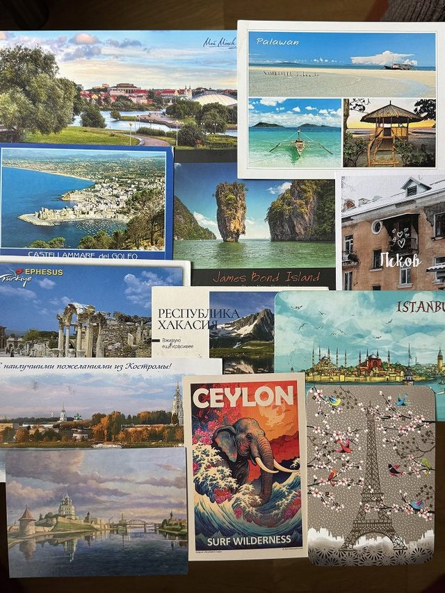
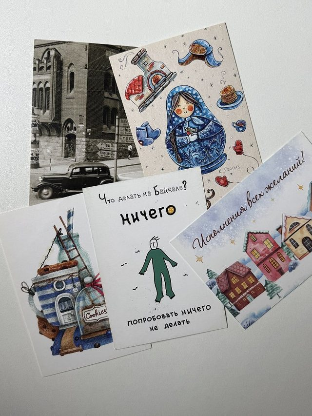
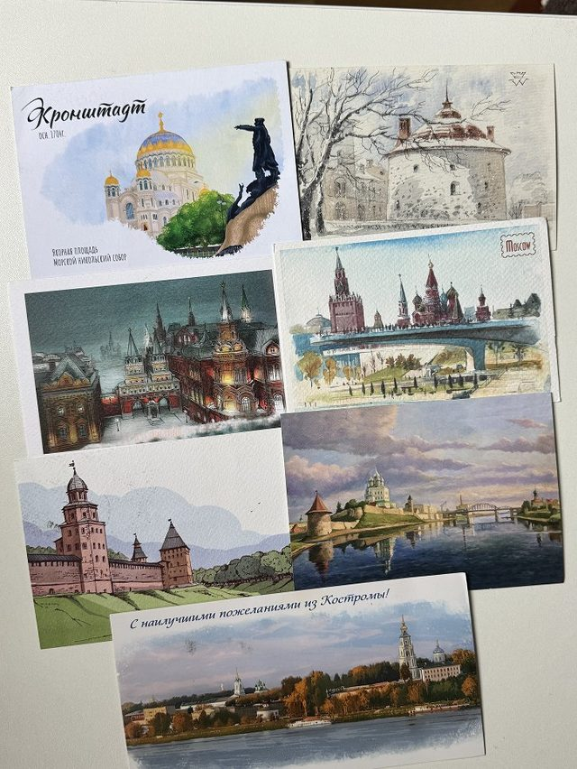
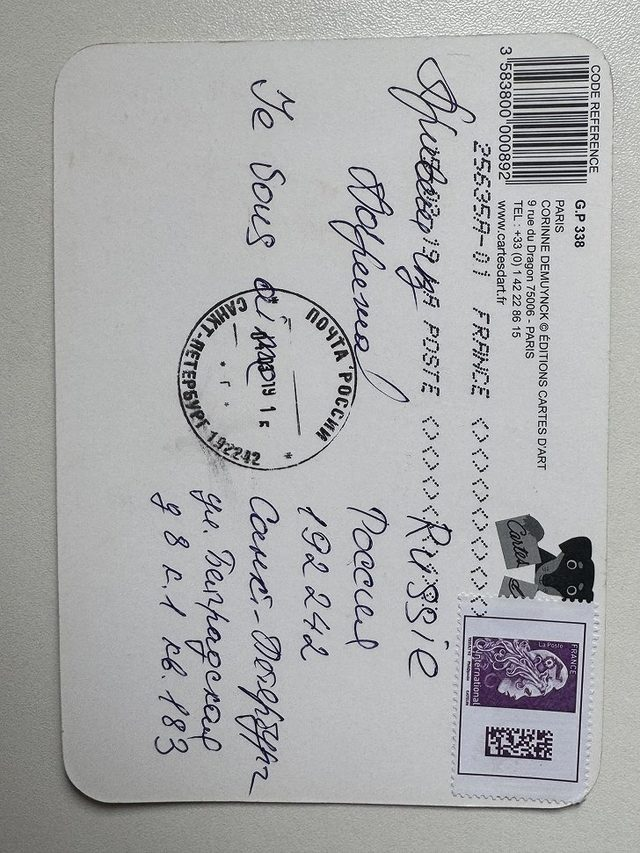
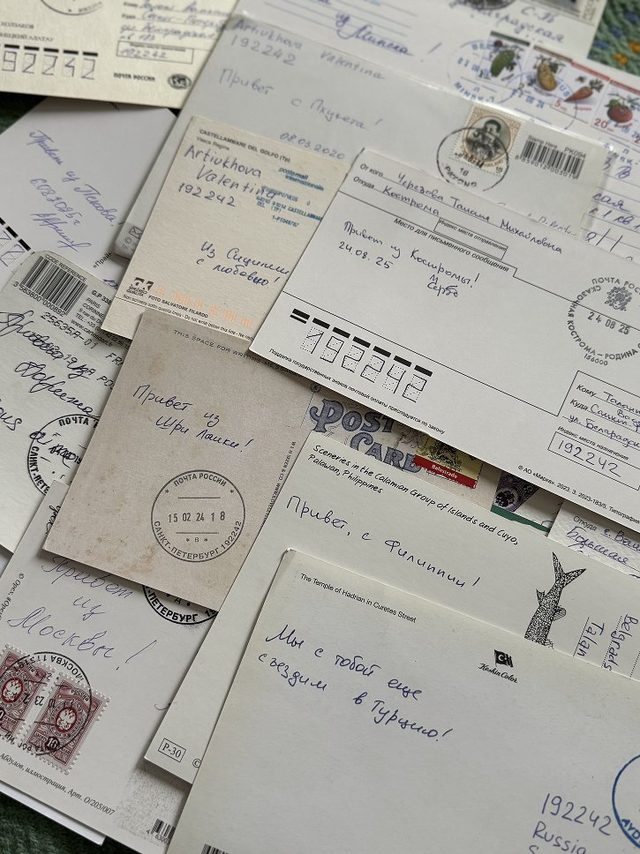
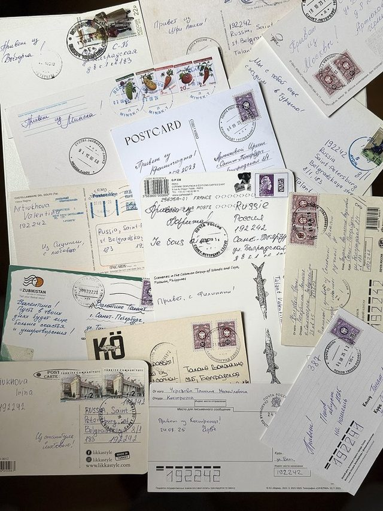
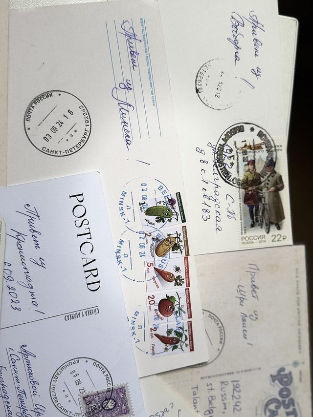
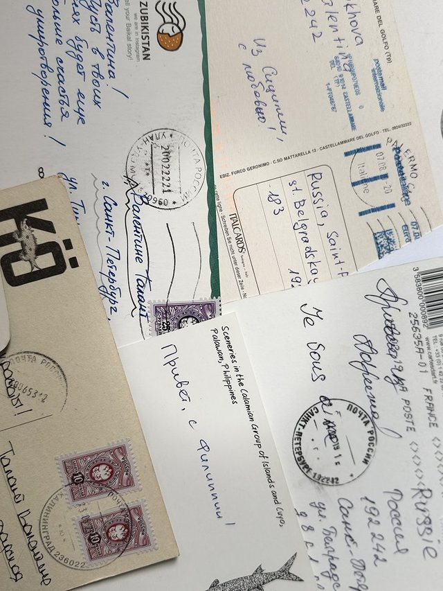
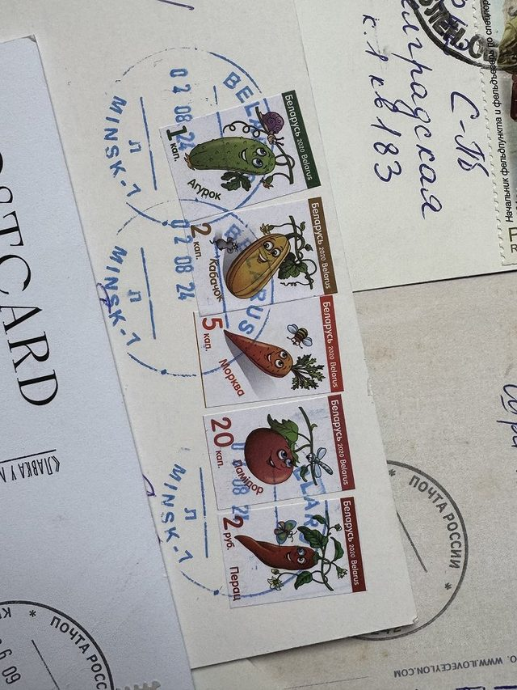
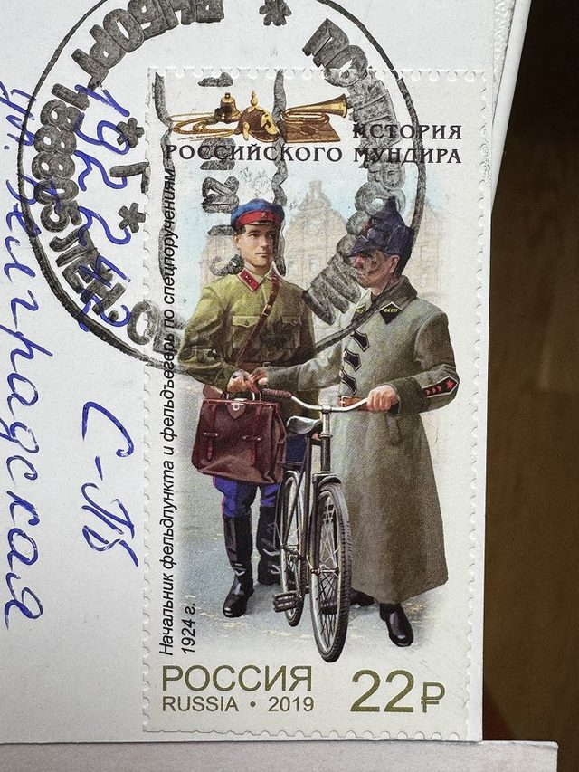
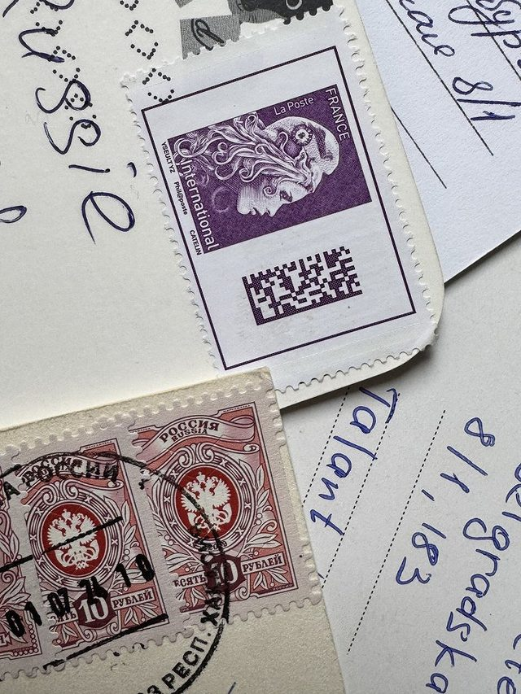
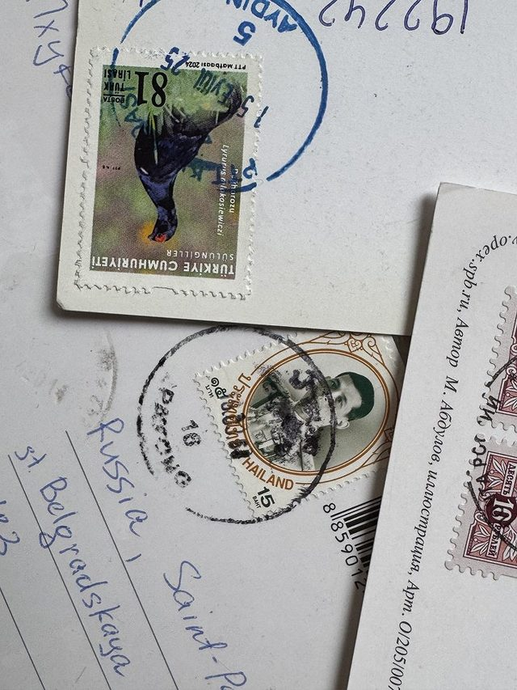
Валентина
«Каждая открытка несёт не просто «привет» из нового места — она несёт воспоминания и историю».
Моя история коллекционирования открыток началась в далёком 2019 году. Тогда моя тётя поехала навестить свою школьную подругу во Францию — девочки не виделись больше десяти лет. Что везут в качестве сувенира из Франции? Брелок с Эйфелевой башней, магнит на холодильник, варенье из лука? Девочки мечтают о настоящем французском парфюме — я не была исключением. И заветный флакончик эксклюзивного аромата ждал меня дома: «Fragonard» с ароматом мимозы.
Казалось бы, желание исполнено, сувенир из Парижа на полке — счастью нет предела. Как бы не так. Куда большее удовольствие и удивление принесла открытка, которую, к слову сказать, никто не ждал. Обычным будним днём, проверяя старый почтовый ящик в поисках очередных квитанций за ЖКХ, я нашла её там — простую почтовую открытку, французскую марку и несколько слов на родном русском на обороте: «Привет из Парижа!»
Ступор. Осознание. Экстаз. Этот незатейливый кусочек плотной бумаги 10 × 15 см проделал путь из Франции до самого Петербурга. Эмоции, которые настигли меня в тот момент, словами не передать.
Уже сложно вспомнить, что именно заставило тётю отправить открытку, но это положило начало нашему семейному хобби. Отныне и по сей день — кто бы где ни был, будь это заграница или небольшой городок в окрестностях Петербурга — мы всегда шлём друг другу открытки, передавая привет из самых разных уголков планеты.
За семь лет в моей коллекции собрались открытки из Сицилии, Шри-Ланки, Турции, Сербии и многих других стран. Не отстают и города России: Москва, Псков, Великий Новгород, Кронштадт, Кострома, Саяногорск. И самое главное — каждая из этих открыток несёт в себе не просто «привет» из нового места. Она несёт воспоминания и историю.